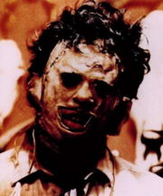

Техасская резня бензопилой
1974 (+три сиквела, альтернативный сиквел, приквел, ремейк и приквел к ремейку)

Кожемордый чему-то рад
Суть такова: небольшая группа прогрессивной американской молодежи приезжает в американскую же глубинку и, впоследствии, планомерно выпиливается столь же небольшой группой реднеков, наиболее интересная личность из которых — амбал в маске (сшитой из самоличносодранного с кого-то лица), бодро размахивающий, собственно, бензопилой.
Несмотря на то, что любому современному зрителю покажется какой-то кустарной поделкой (каковой она и является), в свое время, многие критики нашли в фильме тайные знаки и глубокие аллегории (Википедиё подтверждае) и картина даже была внесена в какой-то кинематографического наследия фонд, но всем похуй.
Значимость:
- Бензопила до сих пор является наиболее брутальным орудием ближнего боя и останется им еще надолго, СпейсМарины гарантируют.
- Фильм является носителем образцового «страшного» названия, за которым, как может показаться, должны скрываться горы расчлененных трупов и океаны кровищи. ИЧСХ, это именно так и есть на самом деле! Атмосфера фильма выстроена очень умело: фильм снят на какую-то хитрую плёнку и смотрится местами как псевдодокументальный, звуковое оформление тоже, скажем прямо, на уровне.
В 1986 году Тоб Хупер снял вторую часть «Техасской резни» с Деннисом Хоппером в главной роли, который в финальном эпизоде (спойлер: крушит бензопилой жилище б-гомерзких каннибалов, чем нереально доставляет!)
В 1990 и 1994 вышли 3 и 4 фильмы. Последний настолько плох, что дико доставляет.
В 2003 и 2006 годах Platinum Dunes были запилены целых два римейка, где первый представлял вполне добротный саспенс фильм, с весьма стоящим сюжетом, красивой, но не тупой ГГ, и качественным саундреком — спасибо фашистскому режиссёру Маркусу Ниспелю. Его приквел, вышедший в 2006 году представляет собой нискосортную гурятину, и преставляет интерес лишь тем, что открывает вопрос на некоторые вопросы, оставшиеся не открытыми в фильме 2003 года. Что примечательно, оба фильма абсолютно не вписываются в общую серию — даже имя маньяка изменено.
В 2013 году вышел 3D сиквел оригинального фильма. Epic Fail.
В 2017 году вышел приквел к оригинальному фильму под названием "Leatherface".
Что касается самого Кожемордого, то он получил право с марта 2016 года пилить и крушить всех в Mortal Kombat X.